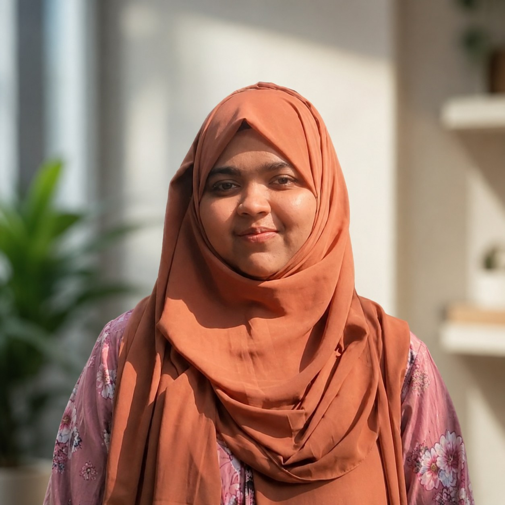

Dhaka, Bangladesh
Building models that hold up outside the benchmark, I'm Mahfuza Maisha
AI/ML Researcher | CS Educator | Python Developer
I work across machine learning research, software development, and teaching, usually starting from a real dataset with a real problem rather than a benchmark for its own sake. I let the problem choose the method rather than the other way around: graph neural networks when the data is relational, bio-inspired optimization when the search space is too large for exhaustive methods, and plain statistical testing when that's genuinely what the question calls for.
I currently lead the AI work on a project team at Contradox, and I spent three consecutive terms as a Teaching Assistant at IIUC alongside ongoing research mentoring. I'm looking toward faculty and research scholar positions, Python development and AI/ML engineering roles, and research collaborations in graph learning and applied ML.

Where to look next
Experience
AI Technical Lead on a project team at Contradox, plus a Django training track under the EDGE Project.
See details ›Teaching
Three terms as a Teaching Assistant at IIUC, from intro labs to the ML lab, plus ongoing research mentoring.
See details ›Certifications
Conference presentations, workshops, and competitions across two years of academic involvement.
See details ›